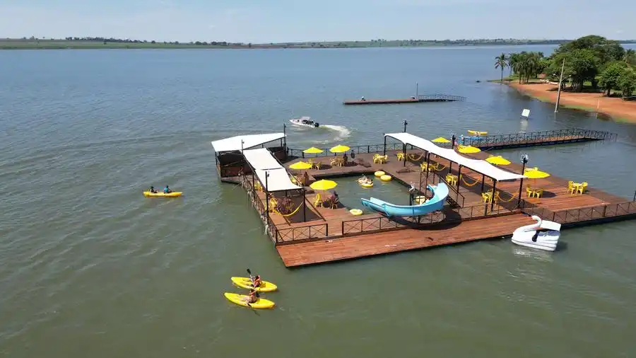

| O Flutua Park nasceu do desejo de inovar e levar a diversão do Náutico Clube Fronteira ainda mais longe — literalmente, para dentro das águas do Rio Grande. A ideia surgiu de um sonho ousado: criar um espaço de lazer flutuante, onde as pessoas pudessem brincar, se refrescar e viver novas experiências em contato direto com a natureza. |
|
Durante muito tempo, o rio foi visto apenas como um cenário que emoldurava o clube. Mas, com o
crescimento do
turismo aquático e o sucesso das atividades náuticas, os idealizadores do Náutico decidiram transformar
o
próprio rio em parte ativa da diversão. Assim, após meses de planejamento e investimento, nasceu o
primeiro
parque flutuante do Brasil — um projeto inédito e ambicioso que uniu tecnologia, segurança e
criatividade. |
|
O Flutua Park foi inaugurado como uma verdadeira extensão do parque aquático do clube, mas com uma
proposta
totalmente nova: levar a alegria e o entretenimento para as águas do Rio Grande. Sua estrutura moderna
conta com
escorregadores, trampolins, áreas de descanso e até um bar drive-thru marítimo, onde os visitantes podem
ser
atendidos direto do barco ou jet ski. A sensação é de estar em um mundo aquático flutuante, cercado pela
paisagem natural e pelo brilho do sol refletindo sobre o rio. |
|
Mais do que uma atração, o Flutua Park simboliza o espírito inovador do Náutico Clube Fronteira. Ele
representa
a união perfeita entre lazer e natureza, um convite para que todos possam se reconectar com o rio que
sempre fez
parte da história da cidade. Com sua proposta única e sua energia vibrante, o parque se tornou
rapidamente um
dos maiores símbolos de modernidade e diversão da região, encantando visitantes de todas as idades e
reafirmando
o Náutico como referência em turismo e entretenimento. |